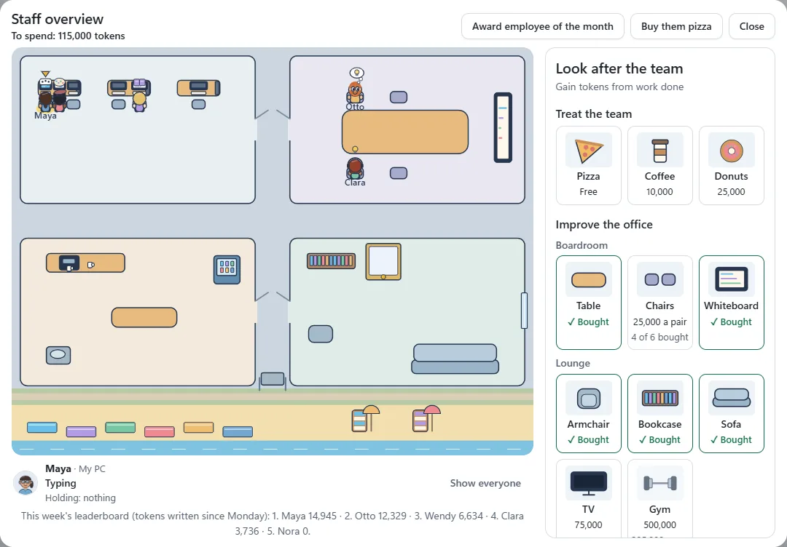

The office (Staff overview)
Your staff at their desks, the thoughts feed, the shop and the awards.
Watching the office

On the right of the chat, Tools | Staff overview (Home's right panel has Urgent | Staff overview): Staff overview shows each hire with their role, the model they run and on which PC, how they are now and what they are doing, with Talk and Edit. At its top is the office: each hire as a little person at their PC's desk while their model loads, reads, thinks, types or draws (a long think, over 15 seconds, goes to the boardroom once it has a table; until then it stays at the desk). With nothing to do they stay at the desk for 2 minutes, then stand up and stretch in the room, after 5 minutes go to the kitchen or the lounge (to what it has), and after 10 minutes take a break in a deck chair on the beach if one is free (On a break, a green cup). While their PC is off they are out of the front door on holiday, lying on a towel on the beach (PC off, a grey power mark), and the PC sits in the far corner in cobwebs.
Press a person (or their card) to follow them; in a chat it follows the person you are talking to. Watch opens it full screen (Esc closes it). Press a person to see what they are holding.
A PC linked while you watch is carried in and set up by IT (and carried out when removed); a project step brings a folder of work to the desk; up to two people with nothing to do join a long think in the boardroom, one to each chair left over; someone whose PC is in use by its owner is away: in the lounge (by its window while it is empty), asleep in the armchair, or helping a brainstorm.
Thoughts
Thoughts (under the small office, and beside the office in Watch, above the shop) is the office chat: a line from a hire each time what they do really changes (an answer started in a chat, a model loading, a step started, finished or stopped, the tests failing, a job done, a picture drawn, their PC off or back on), and on top of that some banter. Each hire has one of six characters for good (pun lover, dry wit, sunny, quiet one, tired lead, bold) with their own lines, and the others sometimes answer. Nothing is made up and no AI model is asked: the banter is fixed lines about what TOMLIN measured. Chat in Watch's header picks Everything, Work only (only what they do) or Off; under the small office, Show general chit-chat switches between Everything and Work only. Kept on this PC.
Awards, pizza and the shop
In the full view, Award employee of the month gives it to whoever wrote the most tokens this month (their portrait goes on the lounge wall, with a 20% off voucher; the frame opens who won and this month's tokens by person). Buy them pizza brings a pizza to the kitchen for everyone with nothing to do.
Look after the team, beside the office (under it on a phone), is the shop: picture cards, each with its price, a tick once bought, and how many tokens are still to go. It spends the tokens your staff have written ("To spend", under the title).
Treat the team: Pizza (free), Donuts, Sandwiches, Ice creams and Cake come to the kitchen table, Coffee is delivered: a courier brings each of them a cup, wherever they are. Energy drinks come from the kitchen's vending machine (click the machine; they have no card, and they are free, like pizza): everyone in gets a can and for a minute walks and talks three times as fast.
Improve the office: pet rocks, rubber ducks and cacti for the desks (each with a name: point at one to read it); the boardroom and the lounge start empty in every office and are bought piece by piece, each once: the boardroom table (a long think goes to it), its chairs a pair at a time up to six (the thinkers sit first; each chair left over seats a helper), the whiteboard, indoor plants, a wall clock and a water cooler; the lounge's armchair, bookcase, sofa, TV, gym equipment and arcade machine (each a place to rest; click the arcade machine to play Tetris, Lunar Lander or Moon Rover yourself); and up to six deck chairs with umbrellas on the beach, for breaks, a beach volleyball net (staff with nothing to do for 5 minutes play, two a side) and an inflatable flamingo on the sea.
Buy everything and treat the team to every treat once, and a trophy case appears in the corridor. This week's leaderboard is under the office.